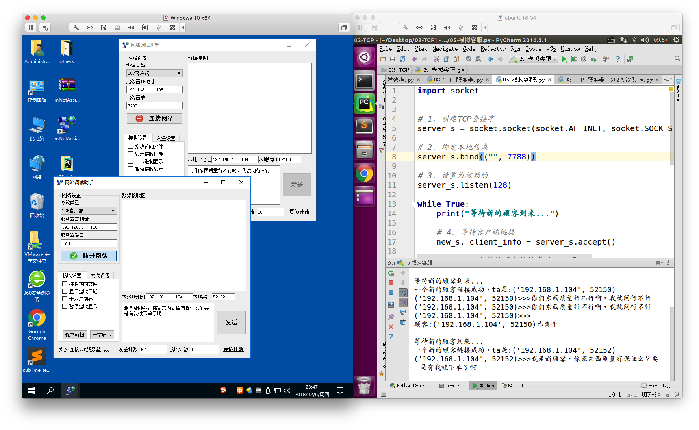

案例：模拟在线客服
1. 想法来源
当在某东商城购物之后，有时需要联系客服进行产品质量方面的反馈，但是会经常遇到客服忙碌需要等待的情况，等一会之后就可以进行够了，这样的系统改怎样来处理的呢？
2. 需求分析
既然是质量方面的反馈，那么就应该用更加稳定的传送数据协议来做，数据不允许丢失，那么就采用TCP
既然用TCP，那么就要考虑，是服务器还是客户端，既然为其他人服务，那么此程序应该是服务器
- 安装TCP服务器的那套流程来编写相应的代码
- 既然提到有时会遇到客服忙碌需要等待的情况，那么意味着这个客服同时只能为一名顾客提供咨询服务，其实这里是此题目的关键，应该用while循环来做
3. 代码实现
import socket
# 1. 创建TCP套接字
server_s = socket.socket(socket.AF_INET, socket.SOCK_STREAM)
# 2. 绑定本地信息
server_s.bind(("", 7788))
# 3. 设置为被动的
server_s.listen(128)
while True:
print("等待新的顾客到来...")
# 4. 等待客户端链接
new_s, client_info = server_s.accept()
print("一个新的顾客链接成功，ta是:%s" % str(client_info))
# 5. 用新的套接字为已经连接好的客户端服务器
while True:
recv_content = new_s.recv(1024)
print("%s>>>%s" % (str(client_info), recv_content.decode("gbk")))
if not recv_content:
# 当客户端调用了close后，recv返回值为空，此时服务套接字就可以close了
# 6. 关闭服务套接字
new_s.close()
break
print("顾客:%s已离开\n" % str(client_info))
# 7. 关闭监听套接字
server_s.close()

- 当一个客户端没有断开链接之前，新的客户端可以链接成功，但是服务器不能接收到数据
- 此程序是一对一服务，不能同时为多个顾客同时服务，
- accept的新的返回值代表着刚刚链接成功的那个客户端